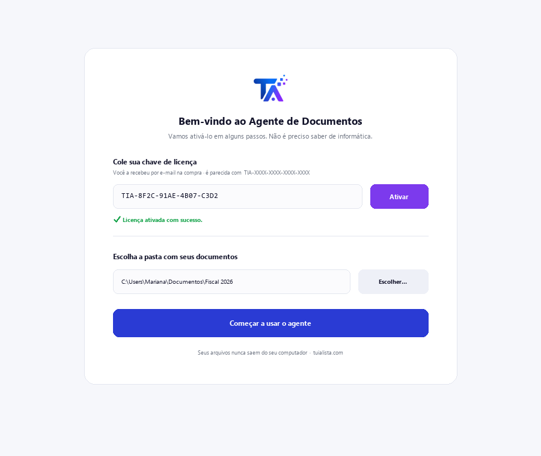
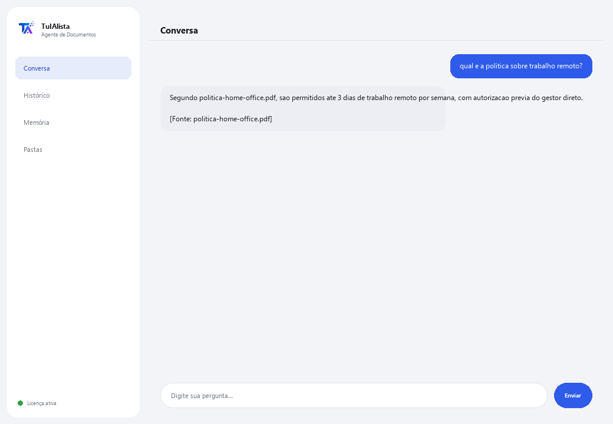

Agente de Documentos
Busca dentro dos seus documentos por você e responde em linguagem normal, citando de qual arquivo veio a resposta.
O que resolve e o que você precisa?
Toda empresa tem pastas cheias de contratos, manuais, arquivos, políticas e relatórios... e quando alguém precisa de um dado, tem que abrir arquivo por arquivo até encontrar. Este agente lê tudo e responde sua pergunta diretamente, citando o arquivo exato de onde veio o dado.
- Você precisa: sua chave de licença (TIA-XXXX-XXXX-XXXX-XXXX) e a pasta com seus documentos. Nada de Python nem conhecimento técnico.
- Primeiro resultado em menos de 5 minutos: instala, ativa, escolhe sua pasta e pergunta diretamente o que precisar saber — não há comandos para aprender.
- Seus documentos nunca saem do seu computador — a leitura e indexação rodam localmente.
soporte@tuialista.com ou acesse tuialista.com/soporte — normalmente respondemos no mesmo dia útil.1 O que este agente faz
É o agente mais simples do catálogo. Você aponta para a pasta onde guarda seus documentos e ele:
- Lê todos (PDF, Word, texto e Markdown), sem você precisar abri-los um por um.
- Responde suas perguntas em linguagem normal: “o que o manual diz sobre férias?”
- Cita o arquivo de onde tirou cada dado, para você poder verificar.
- Se a resposta não está nos seus documentos, ele diz isso em vez de inventar.
O resultado: você encontra qualquer dado em segundos, sem lembrar em qual arquivo estava.
2 Instalação (2 minutos)
Para Windows. Não precisa de internet o tempo todo nem enviar nada para a nuvem.
Baixe o instalador em tuialista.com/descargar (agente Documentos) e abra-o. Ele cria um atalho na sua área de trabalho com o logo — não precisa de Python nem terminal.
Dê duplo clique no novo ícone. Cole sua chave de licença (você a recebeu por e-mail na compra) e clique em Ativar. Você verá um check verde quando for válida.
Selecione a pasta com seus documentos e clique em Começar a usar o agente. Na próxima vez ele abre direto — lembra sua chave e sua pasta.

3 Como usar
O agente abre uma janela de chat, como um app de mensagens — não é uma tela preta de programador. Este é o agente mais direto do catálogo: não tem comandos para memorizar. Você escreve sua pergunta com suas próprias palavras na caixa de texto abaixo, clica em Enviar (ou Enter), e o agente busca a resposta nos seus documentos:

Se nenhum documento contém a informação, o agente diz isso claramente em vez de inventar uma resposta — isso poupa você de continuar buscando em vão. Escreva exit (ou salir) para terminar.
4 Exemplos de uso comum
Encontrar um dado sem abrir cada arquivo
qual é o procedimento para cadastrar um fornecedor novo? — o agente busca em todos os documentos e responde citando o arquivo correto.
Consultar uma política da empresa
quantos dias de férias eu tenho no primeiro ano?
Revisar um arquivo
qual data de entrega ficou combinada no arquivo do projeto Alfa?
Localizar em qual documento algo está
em qual arquivo a garantia do ar-condicionado é mencionada? — o agente diz em qual documento aparece, para você ir direto nele.
5 Perguntas frequentes
Meus documentos são enviados para a internet?
Preciso de internet para usar?
Quais formatos de arquivo ele aceita?
Ele pode ler um PDF escaneado?
Em que idioma ele responde?
Quantos documentos ele consegue gerenciar?
As respostas são 100% exatas?
Posso mudar a pasta de documentos?
Ele guarda um histórico das minhas perguntas?
Ele substitui um buscador ou gestor documental?
6 Solução de problemas
Não lê um PDF / aparece “PDF não lido”
Diz “Licença inválida” ou pede para reconectar
“Nenhum provedor de IA configurado” ao perguntar
Mostra “0 documentos indexados”
Nenhuma dessas soluções resolveu seu problema? Escreva para nós diretamente — teremos prazer em revisar com você.
soporte@tuialista.com ou acesse tuialista.com/soporte — normalmente respondemos no mesmo dia útil.7 Privacidade e confidencialidade
Seus documentos nunca saem do seu computador.
- O agente lê e indexa os arquivos localmente, no seu próprio computador. Não os envia para nenhum servidor nem os compartilha com ninguém.
- A busca e seleção dos fragmentos relevantes acontece no seu computador.
- A única coisa que trafega pela internet é: (1) uma verificação de que sua licença está ativa — que não inclui o conteúdo dos seus documentos —, e (2) ao fazer uma pergunta, um fragmento dos documentos relevantes é enviado ao motor de IA para redigir a resposta.